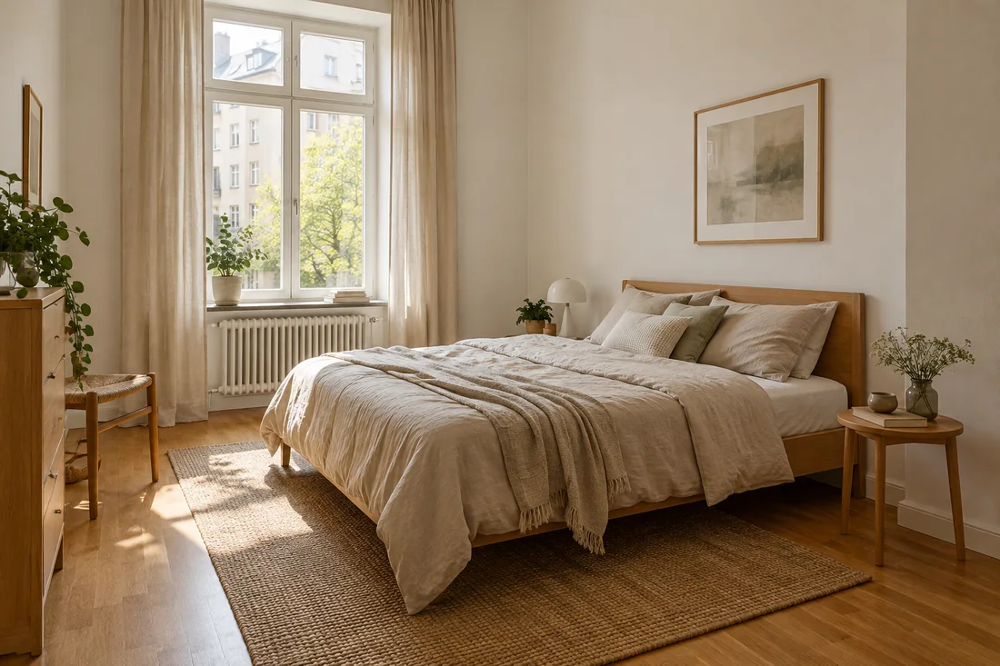
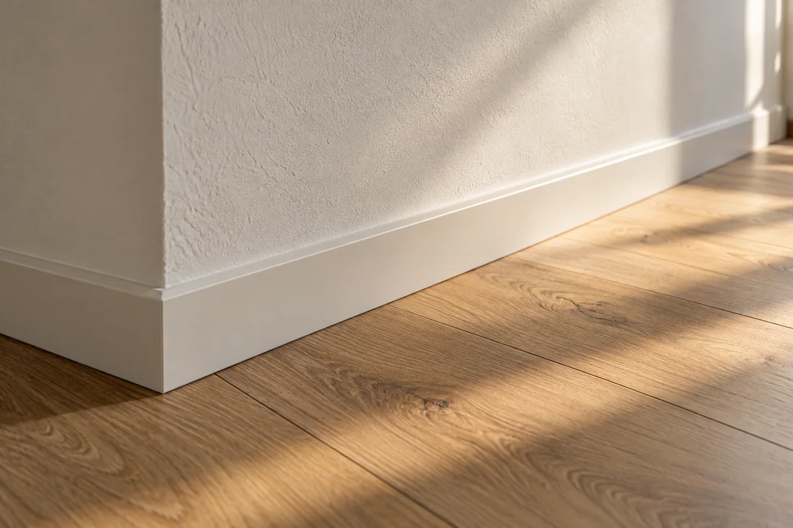
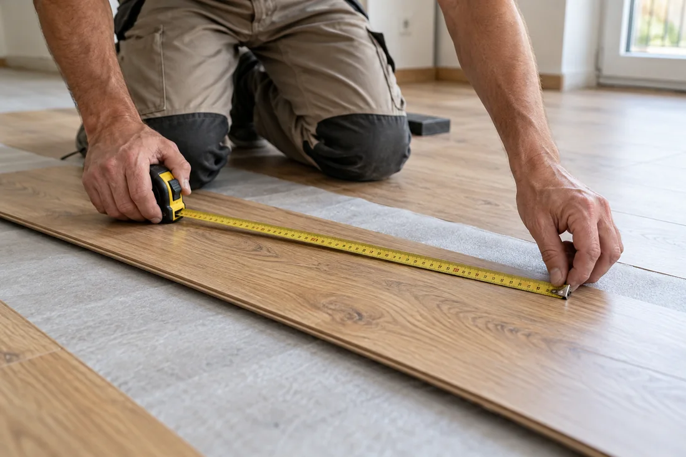

Приватний майстер · Франкфурт-на-Майні та околиці
Ремонт та
оздоблення житла
Від окремого завдання до оновлення кімнати. Обговоримо, що потрібно саме вам.
01 Послуги
З чим можу
допомогти?
Кожне житло й кожне завдання різні. Почнемо з того, що ви хочете змінити.

01020304
Ремонт та внутрішні роботи
Оновлення кімнати чи окремої частини житла. Спочатку обговоримо стан приміщення та потрібний результат.
Укладання ламінату та підлогових покриттів
Укладання ламінату й відповідних підлогових покриттів, включно з підготовчими та завершальними роботами
Монтаж і демонтаж
Допомога з установленням або зняттям окремих елементів та підготовкою приміщення до наступних робіт
Дрібний ремонт і догляд за житлом
Невеликі побутові завдання та господарські роботи. Невеликі замовлення теж можна обговорити.
Конкретний склад і можливість виконання робіт уточнюються під час розмови.
Усі послуги02 Роботи
Роботи — у деталях
Перегляньте фото інтер’єрів та деталей оздоблення. Натисніть на фото, щоб збільшити.


03 Про майстра
Спілкування
напряму
Мене звати Dmytro Mykhavkiv. Я займаюся ремонтом, внутрішнім облаштуванням та монтажними роботами у Франкфурті-на-Майні та околицях.
Більше про мене
04 Порядок співпраці
Як домовитися про роботу
Деталі та порядок узгоджуються для вашого завдання.
- 01
Звернення
Напишіть, зателефонуйте або надішліть кілька фотографій
- 02
Уточнення деталей
Обговоримо побажання, умови на об’єкті та потрібний результат
- 03
Узгодження обсягу
Домовимося про роботи, матеріали та наступні кроки
- 04
Виконання та здача
Після погодження переходжу до роботи й обговорюю з вами результат
05 Що підготувати
Що підготувати
для першої розмови?
- 01
Фото приміщення
Кілька актуальних фото кімнати або зони, де потрібні роботи
- 02
Короткий опис завдання
Що саме потрібно змінити та які побажання є до результату
- 03
Бажаний час початку
Орієнтовний період, коли вам було б зручно почати
06 Питання та відповіді
Поширені запитання
Скільки це буде коштувати?
Напишіть, що потрібно зробити, і надішліть кілька фото. Я уточню деталі та скажу, чи достатньо цього для оцінки, чи краще спочатку подивитися приміщення. Вартість обговоримо до початку робіт.
У мене зовсім маленька робота. Можна звернутися?
Так, напишіть, що саме потрібно полагодити або встановити. Невеликі завдання теж можна обговорити — я скажу, чи зможу допомогти.
Коли ви зможете почати?
Напишіть, коли вам було б зручно, і коротко опишіть роботу. Я перевірю свій графік, а тоді домовимося про дату. Термінові звернення також можна обговорити.
Можна просто скинути фото у WhatsApp?
Так, це зручно. Надішліть кілька фото та напишіть, що хочете змінити. Якщо чогось не буде видно, я попрошу додаткове фото або уточню деталі.
Більше запитаньМенше запитань
Матеріали купувати самому чи ви допоможете?
Якщо матеріали вже є, напишіть, які саме. Якщо ще не купували — спочатку обговоримо, що знадобиться та хто це придбає. Так буде менше ризику купити зайве або невідповідне.
А якщо я ще не знаю, як краще зробити?
Не обов’язково мати готовий план. Розкажіть, що зараз не подобається і який результат хочете отримати. Обговоримо варіанти та з чого можна почати.
Скільки часу займе ремонт?
Це залежить від обсягу робіт, стану приміщення та матеріалів. Після уточнення деталей обговоримо орієнтовну тривалість, включно з паузами на висихання, якщо вони потрібні.
Чи можна жити у квартирі під час робіт?
Залежить від того, що саме робимо і в яких кімнатах. Перед початком обговоримо пил, шум і доступ до приміщень, щоб ви могли спланувати побут.
Що мені підготувати до вашого приїзду?
Для початку достатньо опису завдання, фото й місця розташування. Коли домовимося про роботу, я підкажу, де потрібен вільний доступ і що варто прибрати або накрити.
Ви виїжджаєте за межі Франкфурта?
Я працюю у Франкфурті-на-Майні та околицях. Напишіть населений пункт або поштовий індекс — уточнимо, чи зможу приїхати та на яких умовах.
Що буде, якщо під час ремонту знайдеться ще якась проблема?
Якщо виявиться, що потрібні додаткові роботи, спочатку обговоримо їх з вами, а також вплив на вартість і строки. Новий обсяг потрібно погодити перед виконанням.
Як можна оплатити роботу?
Спосіб і порядок оплати узгодимо до початку робіт. Якщо вам потрібен рахунок або маєте інші побажання щодо оплати, скажіть про це під час першої розмови.
07 Контакти
Що плануєте
оновити?
Можна почати з кількох слів або фото. Я розгляну ваше звернення й чесно скажу, чи зможу допомогти.